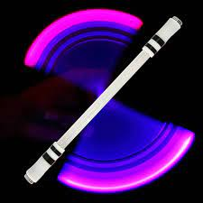
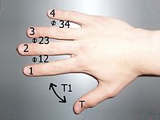

Oque é Pen Spinning?
Pen spinning, também conhecido em português como girar a caneta ou rodar canetas, é um tipo de malabarismo, esporte ou passatempo que consiste em rodar uma caneta em uma ou ambas as mãos de forma sincronizada e rápida, utilizando com destreza a coordenação motora fina. O passatempo é popular em países asiáticos, onde existem cursos e equipamento para seu ensino. Existem diversos campeonatos presenciais e online, sendo que no ano de 2008, Ryuki Omura que na época tinha apenas 16 anos se tornou o primeiro campeão japonês da modalidade. Quem pratica pen spinnig também é conhecido como pen spinner.

História
A arte do girar a caneta, tem sido muito comum desde o final da década de 1970 e não é incomum ver as pessoas girando inconscientemente canetas e lápis enquanto a sua atenção está em outro lugar. Não é claro onde o pen spinnig se originou, mas movimentos semelhantes têm sido populares na Coreia do Sul e os Estados Unidos. Através da internet, o passatempo foi popularizado na primeira metade de década de 2000, através de vídeos e sites especializados sobre o assunto.
Posições dos dedos
Existe uma notação própria no pen spinning, onde os dedos e as aberturas entre eles são numerados, visando facilitar o aprendizado e a explicação das técnicas das manobras.

Dedos
- Dedo T é o polegar (do inglês thumb)
- Dedo 1 é o indicador
- Dedo 2 é o médio
- Dedo 3 é o anelar
- Dedo 4 é o mínimo
Aberturas ou Slots
- Abertura T1 é quando a caneta é situada entre o dedo 1 e o T
- Abertura 12 é quando a caneta se situa entre o dedo 1 e 2
- Abertura 23 é quando a caneta se situa entre o dedo 2 e 3
- Abertura 34 é quando a caneta se situa entre o dedo 3 e 4
Movimentos básicos
ThumbAround Normal
O ThumbAround Normal é um movimento no qual a caneta é impulsionada por qualquer dedo, comumente o 2, passando entorno do T girando 360° em cima dele. Ao fim da manobra, a caneta deve ficar presa na abertura T1.
FingerPass Normal
O Fingerpass Normal é o movimento mais simples de se compreender, executar e também o mais conhecido. Nele a caneta literalmente gira entre os dedos, mais especificamente passa de uma abertura para a outra sequencialmente. O movimento consiste em dar apenas meio giro da caneta entre as aberturas dos dedos (12, 23 e 34). O sentido que a caneta percorre é no lado da palma e para baixo, depois passa a subir no outro lado da mão.
Sonic Normal
O Sonic Normal é conhecido como a técnica que muda rapidamente a caneta de uma posição de dedo para outra. No movimento a caneta roda de forma cônica por trás dos dedos, sem o envolvimento com o polegar, entre as aberturas 23 e 12.[10] Abreviação de supersonic, devido a grande velocidade que é executada, entre os movimentos básicos é o mais difícil de executar.
Charge Normal
O Charge Normal é a técnica que precisa apenas de dois dedos para ser realizada e não possui nenhuma troca entre os dedos. Basicamente a caneta gira conicamente em uma posição e no sentido horário na mão direita ou anti-horário na mão esquerda. Pode ser feito em qualquer uma das abertura mas, comumente é feito na abertura 12. É o movimento similar ao que os bateristas fazem com as baquetas, girando-as.